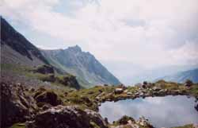

lac des Rousses (2378 m)

Départ : pont de Chézari (2047 m)
Aller : 1,4 km, +331 m, 73 min
Retour : 1,4 km, - 331 m, 41 min
Difficulté : E
Période : juillet - mi octobre
Remarque : le ruisseau entre Crottes et Teppier peut être délicat à franchir (pas de passerelle en 1999).
Remarque sur la route d’accès : une route très étroite monte en 15 km au départ des anciens thermes de Bonneval, elle est réservée aux conducteurs avertis. En terre à partir de 1600 m ; mais c’est au dessous de Versoye qu’elle est la plus étroite. L’alpagiste la descend vers 7 h 30.
Bibliographie : -
Un sentier bien marqué descend, traverse le torrent et remonte au Passage du Retour (lacets raides sur la fin).
Prendre le chemin 4x4 balisé SR vers le chalet des Crottes. Traverser le torrent (pas de passerelle, peut poser problème et inciter à traverser plus haut). A la ruine du Teppier, une sente balisée en rouge (être attentif) monte au lac.
On peut continuer au-dessus vers le lac 2508 (sente).
Au retour, hors sentier, AR possible à la Tête de Beaupré par sa croupe S (anciennes traces).